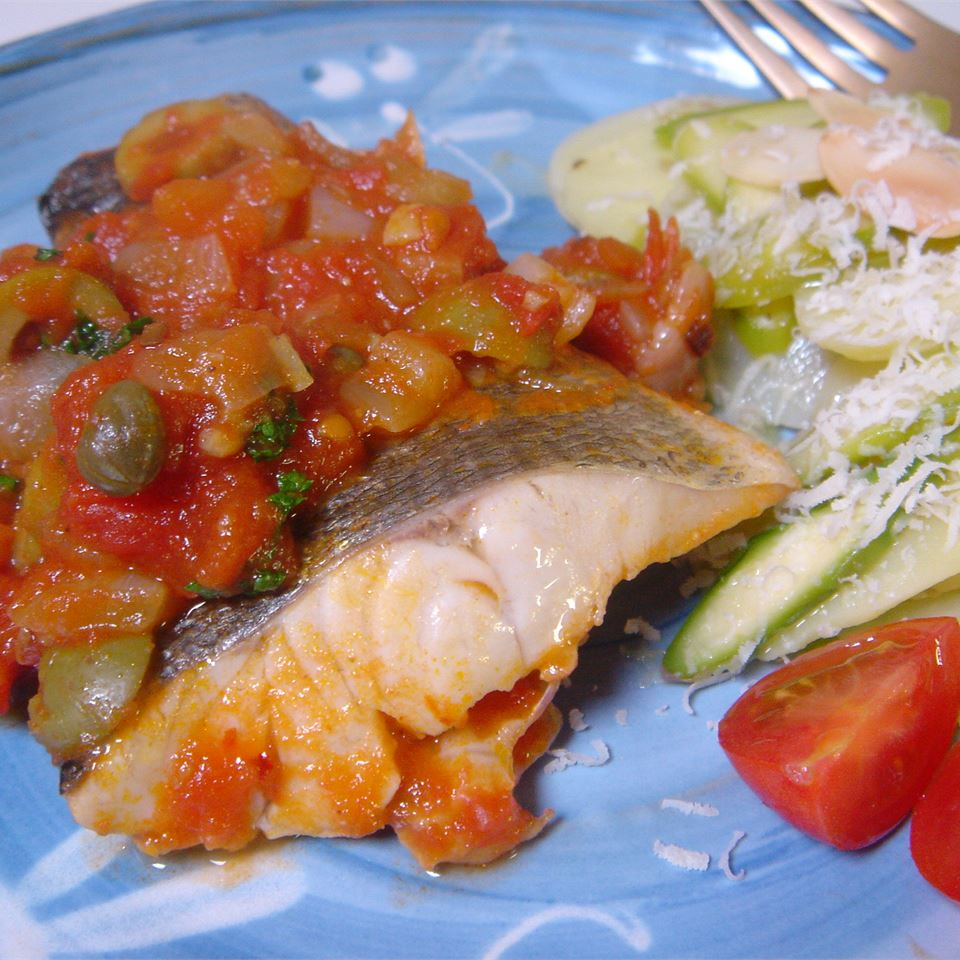

Sea Bass Cuban Style

Description
Easy to prepare - sure to please. Great dish for guests when you have little time (or desire) to slave all day in the kitchen.Sea bass is a white fish that has a mild delicate flavor with a subtle sweetness that is similar to grouper or cod. The flesh is moist, buttery, and tender, with firm medium-sized flakes like haddock. Sea bass is an excellent choice for people with a sensitive palate that don't enjoy “fishy tasting” seafood.
Ingredients
- 2 tablespoons extra virgin olive oil
- 1 ½ cups thinly sliced white onions
- 2 tablespoons minced garlic
- 4 cups seeded, chopped plum tomatoes
- 1 ½ cups dry white wine
- ⅔ cup sliced stuffed green olives
- ¼ cup drained capers
- ⅛ teaspoon red pepper flakes
- 4 (6 ounce) fillets sea bass
- 2 tablespoons butter
- ¼ cup chopped fresh cilantro
Steps
- Heat oil in a large skillet over medium heat. Saute onions until soft. Stir in garlic, and saute about 1 minute. Add tomatoes, and cook until they begin to soften. Stir in wine, olives, capers, and red pepper flakes. Heat to a simmer.
- Place sea bass into sauce. Cover, and gently simmer for 10 to 12 minutes, or until fish flakes easily with a fork. Transfer fish to a serving plate, and keep warm.
- Increase the heat, and add butter to sauce. Simmer until the sauce thickens. Stir in cilantro. Serve sauce over fish.